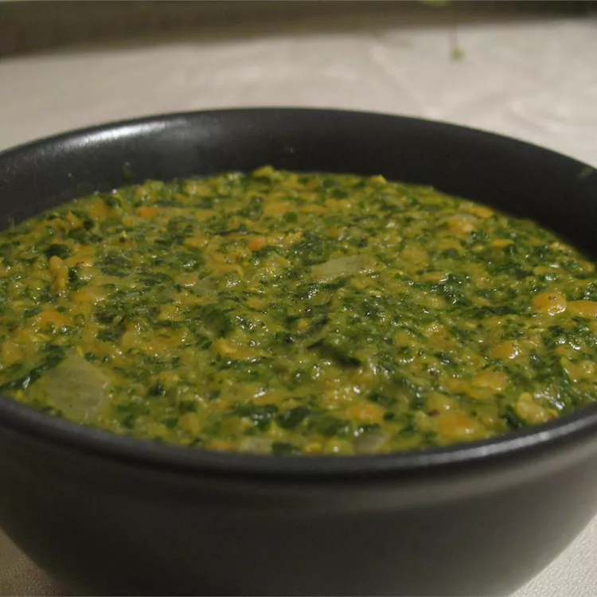

Dahl with Spinach

Description
dal refers to a split version of legumes like lentils, chickpeas, etc. As a recipe, dal is made by simmering together yellow or red split lentils with warming spices and often coconut milk, tomatoes and broth to create a lovely, super-nutritious meal with a stew-like consistency.
Required Ingredients
- 1 ½ cups red lentils
- 3 ½ cups water
- ½ teaspoon salt
- ½ teaspoon ground turmeric
- ½ teaspoon chili powder
- 1 pound spinach, rinsed and chopped
- 2 tablespoons butter
- 1 onion, chopped
- 1 teaspoon ground cumin
- 1 teaspoon mustard seed
- 1 teaspoon garam masala
- ½ cup coconut milk
Steps
- Rinse lentils and soak for 20 minutes.
- n a large saucepan, bring water to a boil and stir in salt, lentils, turmeric and chili powder. Cover and return to a boil, then reduce heat to low and simmer for 15 minutes. Stir in the spinach and cook 5 minutes, or until lentils are soft. Add more water if necessary.
- In a small saucepan over medium heat, melt butter and saute onions with cumin and mustard seeds, stirring often. Cook until onions are transparent, and then combine with lentils. Stir in garam masala and coconut milk and cook until heated through.